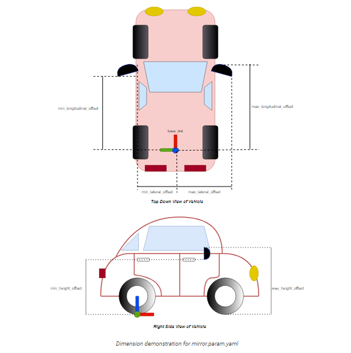

Vehicle Configuration
(Recommendation : Understand URDF and ROS2 roughly before next step)
There are two part to describe vehicle, one is car’s parameters(fig) and another one is relative position of the sensor regrading to car.

sample_vehicle_description contains the file related to parameters
of car
- config : parameter of car
- mesh : appearance of car (could be ignored)
- urdf : size of car
There are three folders related to sensors.
sample_sensor_kit_launchfor launching sensors- launch: used for launch sensors' drivers. If you use lidar, you need
to write your point cloud frames into
pointcloud_preprocessor.launch.py
- launch: used for launch sensors' drivers. If you use lidar, you need
to write your point cloud frames into
sample_sensor_kit_descriptionxacro: used for describing relative position of sensor_kit_base_linksensor_kit.xacro: used for sensors’ position
sample_individual_paramsconfig/default: used for sensors’ direction